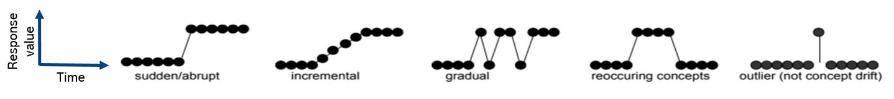
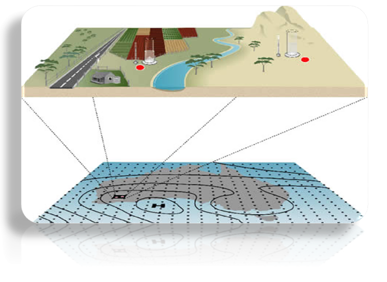
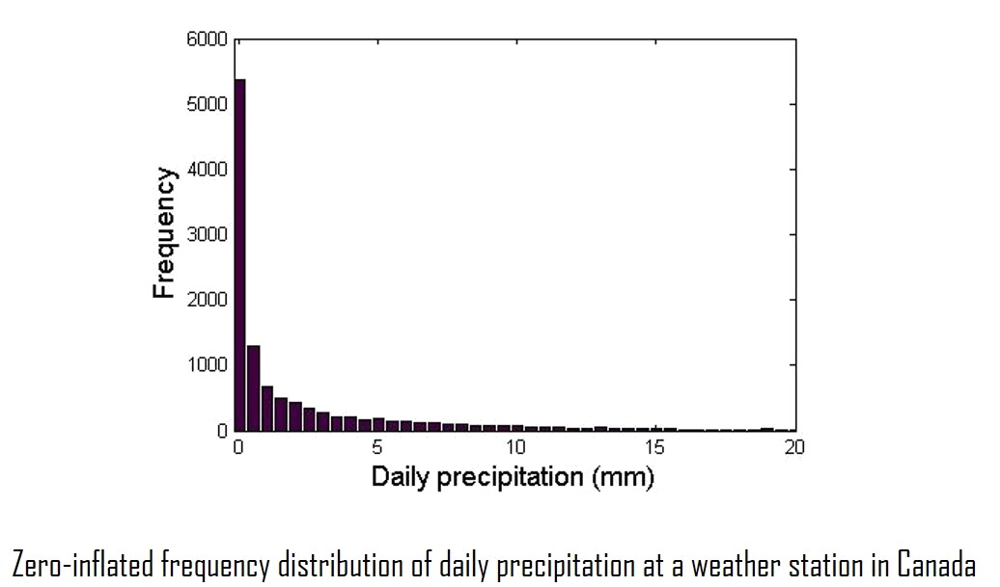
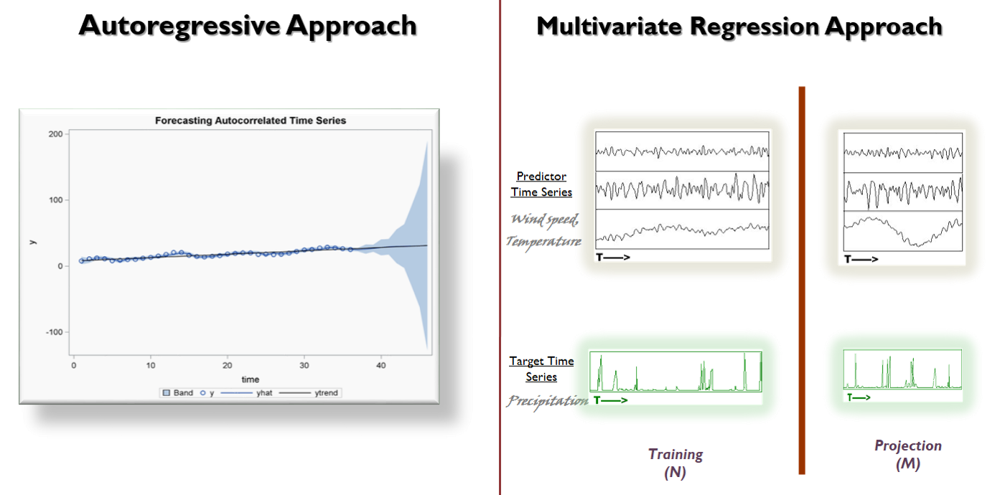
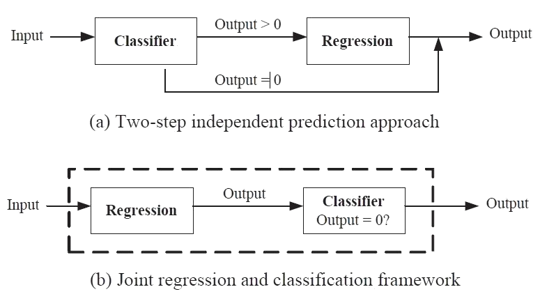
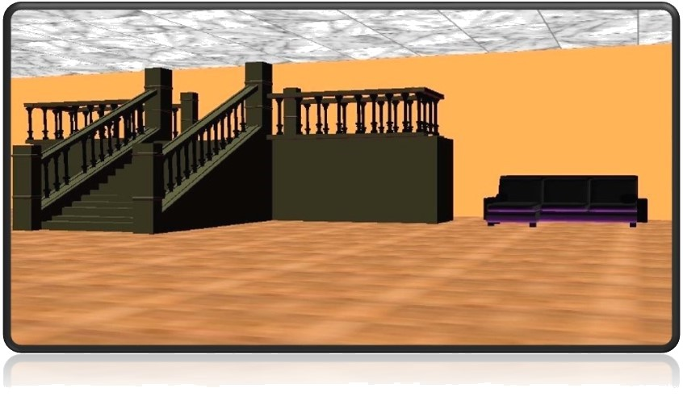

Distribution Preserving Regression
(Contour Regression)
Accuracy-driven regression approaches (such as multiple linear regression (MLR), Ridge and Lasso) are commonly used when the emphasis is on minimizing the sum-squared residuals (SSR). However, these approaches fare poorly in terms of capturing the shape of the distribution (as seen in the Figure). Thus, commonly used regression approaches are not well suited in preserving the distribution characteristics of the projection. Contour Regression (CR) addresses the drawbacks of regression and quantile- based approaches (that focus on the distribution) by simultaneously minimizing error and preserving the shape of the forecast distribution. CR uses a regression function that regularizes the area between the CDF of the target response variable and the regression result.
Multivariate Contour Regression
Multiple output regression is the task of inferring the joint values of multiple response variables from a set of common predictor variables. The response variables are often related, though their true relationships are generally unknown a priori. The Multivariate Contour Regression (MCR) framework is a multiple output regrssion method capable of both minimizing residual errors and capturing the joint distribution of the response variables in a realistic and consistent fashion. This multiple output regression framework preserves relationships among the response variables (including possible non-linear associations) while minimizing the residual errors of prediction by coupling regression methods with geometric quantile mapping.
Concept Drift
Given a time series of labeled instance {(Xt,yt)}t=1∞, where Xt ∈ Rd and yt ∈Z1 (Classification) or yt∈R1 (Prediction), Concept Drift is defined as the scenario when the underlying distribution that generated labeled instances changes over time. Formally, Concept Drift occurs when the joint distribution p(Xt,yt) changes.
- A few applications for Concept Drift Detection
- Model Monitoring
- Model Adaptation
- Hardware Maintenance Monitoring
- A few of the challenges in detecting Concept Drift
- Imbalanced labels
- Verification latency (Infinite)
- Instantaneous (Real time) Detection and Adaptation
The Four-rates framework is a family of Concept Drift Monitoring and Adaptation approach optimized for various setups and scenarios (such as Online or Batch processing, Supervised or Semi-Supervised, Balanced or Imbalanced Labels, with Labeled or Unlabeled data). Four-rates framework is also distribution agnostic.
A few of the models that the Four-Rates framework developed include
- Batch / Online Concept Drift Detection (NFR)
- Concept Drift Detection for Imbalanced DataStream (LFR)
- Concept Drift Detection and Adaptation (LFR-A)
- Hierarchical Concept Drift Monitoring and Adaptation (HLFR)
- Concept Drift Detection and Adaptation in the Absence of Labels (SSFR)
Long-Term forecasting
(Integrated Classification and Regression)


To differentiate between long-term forecasting and short-term forecasting, let consider the example. Given the observed daily temperature at your home town, forecasting the temperature later tonight or tomorrow is an example of short-term forecasting, while estimating the climate a few years of decades from now is an example of long term forecasting. Here is a list of few of the challenges that were important to the domain.

The first challenge to Long term forecasting is that conventional short-term time series forecasting approaches such as autoregressive approaches were not well suited for long-term forecasting. The second challenge is that unlike short-term projections, there are two distinct expectations of long-term projections. First is an accurate projection and second and equally important requirement is an unbiased distribution of the projection. An unbiased projection is one whose distributions is consistent with that of observation.
Let's look at the example of forecasting precipitation. The distribution of an observed precipitation variable varies by location, but is often zero-inflated. A zero-inflated distribution is a distribution with an abundance of zero values. Such distribution can also be found in many other applications that are related to long-term projections, such as climate modeling, ecological modeling, disease monitoring, and traffic monitoring. As conventional regression methods typically prioritize modeling the conditional mean of the distribution, they tend to underestimate the frequency of zero-valued data points as well as the magnitude of the extreme values of a zero-inflated variable. Thus, there is a need to develop models that are geared toward dealing with some of the more uncharacteristic distributions observed such as zero-inflated data.
Integrated Classification and Regression (ICR) framework is a multi-objective framework that simultaneously performs classification and regression to accurately predict values of a zero-inflated time series. The regression and classification models are trained to optimize a joint objective function that minimizes both the classification errors (zero and non-zero values) and regression errors for data points that have non-zero values. The framework compensates for the uncertainty in the data by using a smoothing function that prioritizes non-zero valued data point whose response value is consistent with other data points having similar values for their respective predictor variable, during the learning of the regression function. The effectiveness of the framework is demonstrated in the context of its application to a downscaling precipitation climate variable.
The Long-Term Forecasting model is very flexible and can be used for modelling
Semi-Supervised Learning
Previous studies have shown that unlabeled data are helpful as long as their distribution is similar to those in the labeled training data. For climate data, the natural periodic behavior of the predictor variables and the response variable (precipitation) provides an opportunity to leverage the unlabeled data to improve precipitation prediction. Figure 4.1 shows the average similarity values of the predictor variables over time. The horizontal axis corresponds to the width of two time periods in the time series while the vertical axis corresponds to the average similarity for all pairs of time periods with the given width. One of the encouraging observations is that the similarity of the predictors showed very slow decay with time. This observation encourages the notion that the predictor variables even if separated by large time differences still contain useful information that can be exploited for predicting future precipitation events. One caveat is that though the similarity of predictor variables may not differ much over time, the similarity of the relationship between the predictor and response variables over time tend to decrease at a much faster rate.
To leverage the information in the unlabeled data during model building, a semi-supervised extension to the ICR framework is used. The semi-supervised framework utilizes both labeled and unlabeled data to accurately estimate the future values of a zero-inflated variable, by simultaneously performing classification and regression. The regression and classification models are simultaneously learned by optimizing a unified objective function that includes a graph regularization term to ensure smoothness of their target functions and consistency between the labeled and unlabeled examples. The effectiveness of the semi-supervised learning framework is also demonstrated in the context of precipitation prediction using climate data obtained from the Canadian Climate Change Scenarios Network website.
Forecasting Extreme-Values
When considering the distribution characteristics of the regression outputs, the end user may be more interested in certain quantiles over others. For instance, farmers are often curious to know the frequency and magnitude of extreme values in the climate projections, due to the larger economic implications associated with them. However, as most regression models prioritize the conditional mean of the distribution, they tend to underestimate the frequency of extreme-valued data points. Thus, there is a need to provide a framework that is flexible enough to prioritize the accuracy at the quantiles of the end-user's choice, without significantly degrading the performance at other quantiles.
The ICR model can also be used to focus on reliable prediction of extreme values events for a zero-inflated response variable. This multi-objective framework incorporates the multiple objectives of classification, regression and conditional quantiles. The frameworks have been used on climate data and have demonstrated their ability in accurately detecting the frequency, timing and magnitude of extreme temperature and precipitation events effectively compared to several baseline methods.
Virtual Reality

Virtual Video Gallery is a virtual video browsing environment that facilitates browsing and retrieval of video clips from a video repository by using content-based video retrieval techniques. The browsing structure avoids the need for the user to submit a query in the form of a video or an image, while still providing retrieval capabilities that are sensitive to the underlying media content.
The browsing environment provides alternative trails of related content that users can browse for video browsing by visually portraying inter-video relationships derived from a composite of content and metadata similarity. The Virtual Gallery is presented as a semi-realistic representation of a real art gallery, as opposed to an artificial computer simulated environment, and has been designed with the intention of exploiting human spatial memory and the ability of humans to recognize visual patterns. The concept is developed in the context of previous research done on content-based image retrieval and browsing environments. The results of user studies that examined the effectiveness of the system show that there was 12% improvement in successfully finding a video of choice and 26% improvement in finding a video similar to a given video. There was a 60% reduction in the number of queries entered as well as 70% increase in number of video clips viewed per user. This translates to approximately a 300% improvement in the success of retrieving a video of choice, per query entered by the user.
Paper
Anomaly Detection
An anomaly detection model that seamlessly works with any numerical data stream. Unlike conventional anomaly detection tools, this solution does not require historical data or expert to define rules or provide labeled data apriori to learning the model. A semi-supervised framework is leveraged to customize the model’s decision boundary based on user’s feedback (labels) to anomalies detected by the model. The online nature of the framework allows the decision boundaries of the model to adapt to drift in the data over time.
Paper